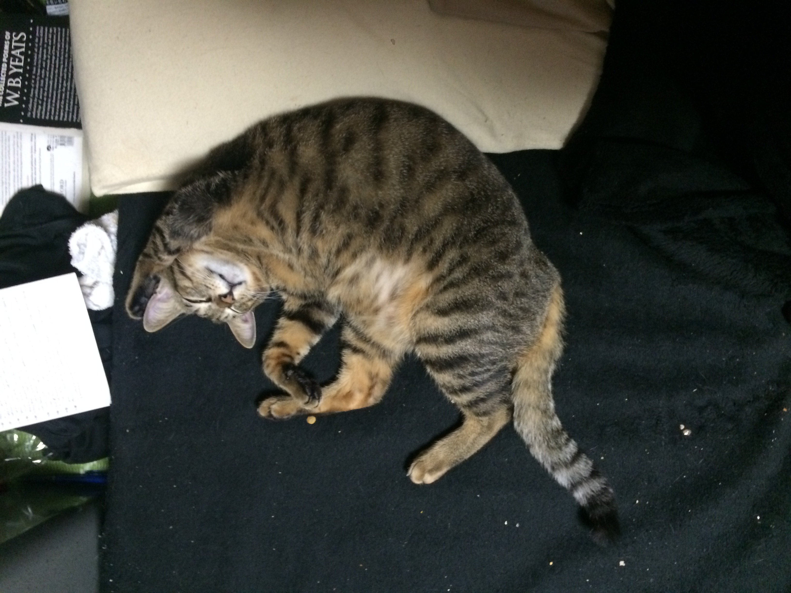

Pumpkin's Place

We all know the world's about Pumpkin. So here're some facts
The best activities
Pumpkin's most favoritest activities are:
- Napping on a bed that's about 30 times his size
- Hearing the rustle of treats in the bag
- Yowling when mom and dad are trying to sleep
- Playing with the toy, but only on the bed cause it's soft on my belly
The best foods
There's all kinds of food in the world, but Pumpkin knows what's best.
- Sanma, or Pacific Saury for you non-Japanese
- Tuna--straight from the can
- Meaty-centers that mom used to buy us. She doesn't anymore tho...
Here's
what some other stupid cat's like to do.
As you can see, everything is better when it's all according to Pumpkin.
Here you can find my schedule, if you wanna, like,
do something.
About me